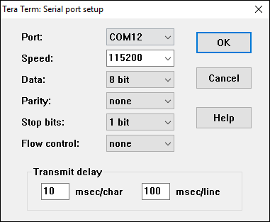
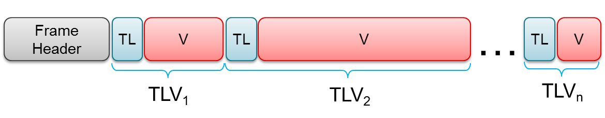
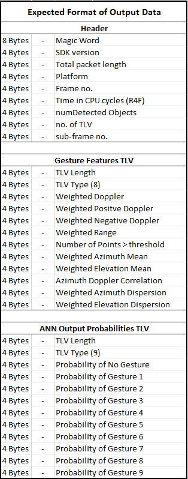

# Overview
This lab demonstrates the use of TI mmWave sensors for gesture recognition applications.
The range, velocity, and angle data from mmWave sensors can enable the detection and classification of several natural gestures.
The example provided in this demo can recoginize 9 distinct hand gestures: Left swipe, Right swipe, Up swipe, Down swipe, Clockwise twirl, Counterclockwise twirl,
On gesture, Off gesture, and Shine gesture.
**NOTE**: This demo is compatible with both the xWR6443 and xWR6843, as it only
uses the on-chip Hardware FFT acclerator (HWA) and does not utilize the on-chip
c674x DSP. While this demo is intended for the xWR6443 device, a xWR6843 device
can be used for emulation.
# Requirements
## Hardware Requirements
Item | Details
--------------------------|-----------------
Device | [xWR6843ISK-ODS ES2.0 Antenna Module](https://www.ti.com/tool/IWR6843ISK-ODS) or [xWR6843AOP ES2.0 Antenna Module](https://www.ti.com/tool/IWR6843AOPEVM)
MMWAVEICBOOST Carrier Board | OPTIONAL: [MMWAVEICBOOST Carrier Board](http://www.ti.com/tool/MMWAVEICBOOST) for CCS based development and debugging
Computer | PC with Windows 10. If a laptop is used, please use the 'High Performance' power plan in Windows.
Micro USB Cable |
Power Supply | 5V, >3.0A with 2.1-mm barrel jack (center positive). The power supply can be wall adapter style or a battery pack with a USB to barrel jack cable.
Note: Both AWR6843ISK-ODS and IWR6843ISK-ODS are supported and can be used
interchangeably. Please consult the respective datasheets for details on
the differences between the devices.
## Software Requirements
Tool | Version | Download Link
----------------------------|---------------------------|--------
TI mmWave SDK | 3.5.0.x | [TI mmWave SDK 3.5.0.x](http://software-dl.ti.com/ra-processors/esd/MMWAVE-SDK/03_05_00_04/index_FDS.html) and all the related tools are required to be installed as specified in the [mmWave SDK release notes](http://software-dl.ti.com/ra-processors/esd/MMWAVE-SDK/03_05_00_04/exports/mmwave_sdk_release_notes.pdf)
Uniflash | Latest | Uniflash tool is used for flashing TI mmWave Radar devices. [Download offline tool](http://www.ti.com/tool/UNIFLASH) or use the [Cloud version](https://dev.ti.com/uniflash/#!/)
## Getting familiar with the device
[[y! Run Out of Box Demo
Before continuing with this lab, users should first run the out of box demo for the EVM.
This will enable users to gain familiarity with the sensor's capabilities as well as the various tools used across all labs in the mmWave Toolbox.
]]
# Quickstart
## 1. Configure the EVM for Flashing Mode
* Follow the instructions for [Hardware Setup of Flashing Mode](..\..\..\..\docs\hardware_guides\evm_setup_operational_modes.html)
## 2. Flash the EVM using Uniflash
Flash the binary listed below using UniFlash. Follow the instructions for [using UniFlash](..\..\..\..\docs\software_guides\using_uniflash_with_mmwave.html)
BIN Image Name | Location
--------------------------|------------
gesture_ML_6443_ODS.bin or gesture_ML_6443_AOP.bin | `<MMWAVE_TOOLBOX_INSTALL_DIR>\labs\gesture_recognition\Gesture_with_Machine_Learning\prebuilt_binaries\`
## 3. Configure the EVM for Functional Mode
* Follow the instructions for
[Hardware Setup of of Functional Mode](..\..\..\..\docs\hardware_guides\evm_setup_operational_modes.html)
## 4. Run the Lab
### 1. GUI Setup
* Open a TeraTerm Instance for the User UART port as described below:
* For Radar EVM only
* USER UART = Silicon Labs Dual CP2105 USB to UART Bridge: Enhanced COM Port
* For MMWAVEICBOOST + Radar EVM
* USER UART = XDS110 Class Application/User UART
* **TeraTerm (User UART):** Go to **Setup → Serial Port** dialog and enter the COM Port number for the User UART Port and select the baud rate and other settings as shown below and press OK.
<div style="text-align: center;">
<p></p>
</div>
* Press Enter on the Control (User) UART terminal. You should see the <b>mmWave:/></b> prompt which indicates that the demo started correctly. Please note that the gesture demo firmware auto-configures the sensor with pre-programmed chirp configuration at startup.
* The detected gesture output will be displayed on the User UART terminal. This demo also outputs the extracted features used for the nerual network inference as well as the raw neural network output probabilities for each gesture in a TLV structure to the Data UART port.
### 2. Running the Demo
This lab demonstrates the following features.
* Detection/Classification of nine gestures (within a range of about 0.3m): **Right to Left Swipe**, **Left to Right Swipe**, **Up to Down Swipe**, **Down to Up Swipe**, **Clockwise Twirl**, **Counterclockwise Twirl**, **On Gesture**, **Off Gesture**, **Shine Gesture**.
[[+d Expand for example gestures at 0.5x speed.
* Right to Left Swipe
<video width="320" height="240" autoplay muted loop controls src="images/GestureClips/Right2Left.mp4" type="video/mp4"/>
* Left to Right Swipe
<video width="320" height="240" autoplay muted loop controls src="images/GestureClips/Left2Right.mp4" type="video/mp4"/>
* Up to Down Swipe
<video width="320" height="240" autoplay muted loop controls src="images/GestureClips/Up2Down.mp4" type="video/mp4"/>
* Down to Up Swipe
<video width="320" height="240" autoplay muted loop controls src="images/GestureClips/Down2Up.mp4" type="video/mp4"/>
* Clockwise Twirl
<video width="320" height="240" autoplay muted loop controls src="images/GestureClips/TwirlCW.mp4" type="video/mp4"/>
* Counterclockwise Twirl
<video width="320" height="240" autoplay muted loop controls src="images/GestureClips/TwirlCCW.mp4" type="video/mp4"/>
* On Gesture
<video width="320" height="240" autoplay muted loop controls src="images/GestureClips/HandAway.mp4" type="video/mp4"/>
* Off Gesture
<video width="320" height="240" autoplay muted loop controls src="images/GestureClips/HandToward.mp4" type="video/mp4"/>
* Shine Gesture
<video width="320" height="240" autoplay muted loop controls src="images/GestureClips/Shine.mp4" type="video/mp4"/>
+]]
* Perform the above gestures with your hand in front of sensor. The User UART terminal should show the corresponding output.
This concludes the Quickstart Section
# Developer's Guide
## Import Lab Project to CCS
To import the source code into your CCS workspace, a CCS project is
provided in the lab at the path given below.
* Start CCS and configure workspace as desired.
* Import the project specified below to CCS.
`<INDUSTRIAL_TOOLBOX_INSTALL_DIR>\labs\Gesture_Recognition\Gesture_with_Machine_Learning\src\6443\gesture_ML_6443_ODS.projectspec` or `<INDUSTRIAL_TOOLBOX_INSTALL_DIR>\labs\Gesture_Recognition\Gesture_with_Machine_Learning\src\6443\gesture_ML_6443_AOP.projectspec`
* Verify that the import occurred without error by checking that
`gesture_ML_6443_ODS` or `gesture_ML_6443_AOP` shows up in the project explorer
[[r! Error during Import to IDE
If an error occurs, check that the software dependencies listed above
have been installed. Errors will occur if necessary files are not
installed in the correct location for importing.
]]
## Build the Lab
* Select the **gesture_ML_6443_ODS** or **gesture_ML_6443_AOP** in **Project Explorer**
so that it is highlighted. Right click on the project and select **Rebuild Project**. The project will then build.
* On successful build, the following should appear:
* In `<PROJECT_WORKSPACE_DIR>\gesture_ML_6443_ODS `→` Debug`
* **gesture_ML_6443_ODS.xer4f** (this is the Cortex R4F binary used for CCS debug mode)
* **gesture_ML_6443_ODS.bin** (this is the flashable binary used for deployment mode)
{{y Selecting Rebuild instead of Build ensures that the project is always
re-compiled. This is especially important in case the previous build
failed with errors.}}
[[r! Build Fails with Errors
If the build fails with errors, please ensure that all the software
requirements are installed as listed above and in the mmWave SDK release
notes.
]]
[[b! Note
As mentioned in the [Quickstart](#quickstart) section, pre-built binary
files, both debug and deployment binaries are provided in the
pre-compiled directory of the lab.
]]
## Execute the Lab
There are two ways to execute the compiled code on the EVM:
* **Deployment mode**: the EVM boots from flash and starts
running the bin image at power-up
* Using Uniflash, flash the **gesture_ML_6443_ODS.bin**
found at `<PROJECT_WORKSPACE_DIR>\gesture_ML_6443_ODS\Debug`
* The same procedure for flashing can be used as detailed in the
[Flash the EVM](#2-flash-the-evm-using-uniflash) section.
* **Debug mode**: This mode is used for downloading and running the
executable from CCS. This mode enables JTAG connection with CCS
while the lab is running and is useful during development and debugging.
* Follow the [CCS Debug Mode Guide](..\..\..\..\docs\software_guides\using_ccs_debug.html)
## UART Output Data Format
This demo outputs data using a TLV(type-length-value) encoding scheme with little endian byte order. For every frame, a packet is sent consisting of a fixed sized Frame Header and then a variable number of TLVs depending on what was detected in that scene. The TLVs for this demo include the extracted features used for the nerual network inference as well as the raw neural network output probabilities for each gesture.
<div style="text-align: center;">
<p></p>
</div>
<div style="text-align: center;">
<p></p>
</div>
## Neural Network
This demo utilizes a neural network model which runs on the ARM core making predictions based on extracted features. A sliding window buffer of features, extracted from the data across a number of frames, is used as input to the neural network. The model outputs a set of probabilities, each represents the probability that the input data belongs to a specific gesture.
The model is implemented in the form of header files which contain the weight and bias values for each layer in the neural network. These header files can be found in `src/6443/include/neuralnet/`.
### Features
The model is trained on following extracted features.
Exracted Feature | Description
--------------------------- | ------------
Doppler Average | Weighted average of the Doppler across the heatmap
Elevation Weighted Mean | Select the N cells of the heat-map with the highest magnitude and for each cell compute the elevation bin (via angle-FFT). The average elevation is the weighted average of all these elevation bin indices.
Azimuth Weighted Mean | Select the N cells of the heat-map with the highest magnitude and for each cell compute the azimuth bin (via angle-FFT). The average azimuth is the weighted average of all these azimuth bin indices.
Number of detected points | Number of cells in the heatmap that have a magnitude above a certain threshold
Range Average | Weighted average of the range across the heatmap.
Doppler Azimuth Correlation | Doppler Azimuth correlation which show how Doppler and Azimuth values are related across the frames.
### Layers
The neural network which is used in this demo consists two hidden layers as detailed below.
Layer |
---------------- | ----
90 input nodes | (6 features x 15 frames)
1st dense layer | outputs 30 nodes
ReLU activation |
2nd dense layer | outputs 60 nodes
ReLU activation |
Softmax function | convert to probabilities
### Retraining
Users may wish to retrain the neural network model for various reasons such as adding or removing certain gestures. The full process for retraining and deploying a model is not provided in this guide; however, one can save the extracted features which are output over UART and use the saved features as training data in the model building process.
# Need More Help?
* Search for your issue or post a new question on the
[mmWave E2E forums](https://e2e.ti.com/support/sensor/mmwave_sensors/f/1023)
* See the SDK for more documentation on various algorithms used in this
demo. Start at `<mmWave_sdk_install_dir>/docs/mmwave_sdk_module_documentation.html`